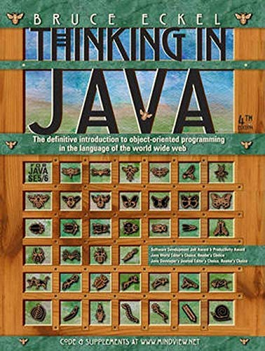
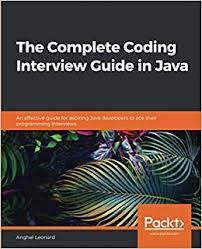
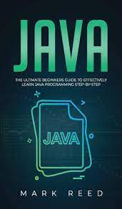
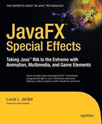
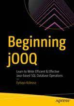
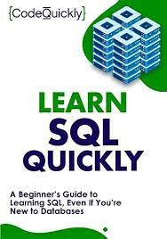
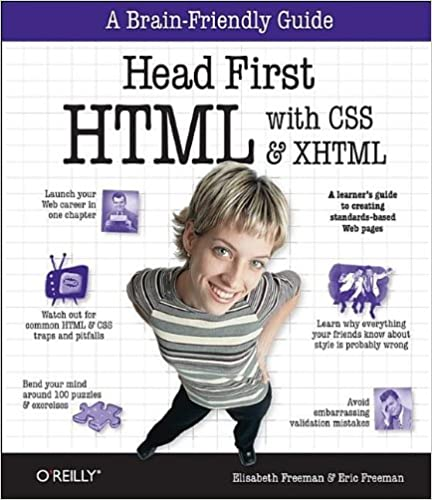
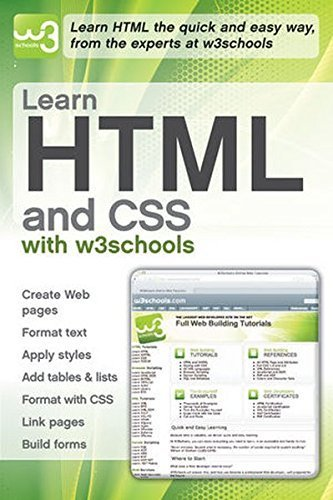

| Author: | Bruce Eckel |
|---|---|
| Publisher: | Prentice Hall Ptr |
| Year of issue: | 2006 |
| ISBN: | 0131872486 |
| Cover type: | soft |
| Language of publication: | English |
| Number of pages: | 1150 |
The legendary author Bruce Eckel brings Java to life with this extraordinarily insightful, opinionated and downright funny introduction. Thinking in Java introduces all of the language's fundamentals, one step at a time, using to-the-point code examples. More than virtually any other book, Thinking in Java helps you understand not just what to do -- but why. Eckel introduces all the basics of objects as Java uses them; then walks carefully through the fundamental concepts underlying all Java programming -- including program flow, initialization and cleanup, hiding implementations, reusing classes and polymorphism. Using extensive, to-the-point examples, he introduces error handling, exceptions, Java I/O, run-time type identification, and passing and returning objects. He covers the Java AWT, multithreading, network programming with Java -- even design patterns. The best way to understand the real value of this book is to hear what readers of the online version have been saying about it: "much better than any other Java book I've seen, by an order of magnitude..." "mature, consistent, intellectually honest, well-written and precise..." "a thoughtful, penetrating analytical tutorial which doesn't kowtow to the manufacturers..." " Thank you again for your awesome book. I was really floundering, but your book has brought me up to speed as quickly as I could read it!"For both beginner and experienced C and C++ programmers who want to learn Java.

| Author: | Anghel Leonard |
|---|---|
| Publisher: | Packt Publishing |
| Year of issue: | 2020 |
| ISBN: | 9781839212062 |
| Cover type: | soft |
| Language of publication: | English |
| Number of pages: | 788 |
Explore a wide variety of popular interview questions and learn various techniques for breaking down tricky bits of code and algorithms into manageable chunks. Key FeaturesDiscover over 200 coding interview problems and their solutions to help you secure a job as a Java developerWork on overcoming coding challenges faced in a wide array of topics such as time complexity, OOP, and recursionGet to grips with the nuances of writing good code with the help of step-by-step coding solutions. Book DescriptionJava is one of the most sought-after programming languages in the job market, but cracking the coding interview in this challenging economy might not be easy. This comprehensive guide will help you to tackle various challenges faced in a coding job interview and avoid common interview mistakes, and will ultimately guide you toward landing your job as a Java developer. This book contains two crucial elements of coding interviews - a brief section that will take you through non-technical interview questions, while the more comprehensive part covers over 200 coding interview problems along with their hands-on solutions. This book will help you to develop skills in data structures and algorithms, which technical interviewers look for in a candidate, by solving various problems based on these topics covering a wide range of concepts such as arrays, strings, maps, linked lists, sorting, and searching. You'll find out how to approach a coding interview problem in a structured way that produces faster results. Toward the final chapters, you'll learn to solve tricky questions about concurrency, functional programming, and system scalability. By the end of this book, you'll have learned how to solve Java coding problems commonly used in interviews, and will have developed the confidence to secure your Java-centric dream job. What you will learnSolve the most popular Java coding problems efficientlyTackle challenging algorithms that will help you develop robust and fast logicPractice answering commonly asked non-technical interview questions that can make the difference between a pass and a failGet an overall picture of prospective employers' expectations from a Java developerSolve various concurrent programming, functional programming, and unit testing problems. Who this book is forThis book is for students, programmers, and employees who want to be invited to and pass interviews given by top companies. The book assumes high school mathematics and basic programming knowledge.

| Author: | Mark Reed |
|---|---|
| Publisher: | Packt Publishing |
| Year of issue: | 2020 |
| ISBN: | 9781647710835 |
| Cover type: | soft |
| Language of publication: | English |
| Number of pages: | 210 |
Are you interested in learning how to write computer programs?Are you a beginner
to this concept and want something that is simple to learn and implement? Have
you considered Java to be the best option for you?Computer programming still
holds a large amount of uncertainty among those who are not familiar with it
and who may still think that this is something far too complex for a casual
user to learn. But computer languages have taken great strides in the past few
decades and there are now simple general-purpose ones that do a great job. One
such is Java and inside Java: The Ultimate Beginners Guide to Effectively Learn
Java Programming Step-by-Step, you’ll find the perfect computer language for
you to get started with, delivering advantages like:
* An independent and object-oriented language
* No complex features making it easy to learn
* Portable codes can be used on other PC’s
* A secure and virus-free system
* Can run on any computer architecture
* Fast and reliable
* Strong memory management
* And lots more…
Learning to program with your computer is now easier than it has ever been
and even if you have never tried to learn something like this before, you
will find step-by-step instructions that don’t just make it easy, but fun as well.
If you are a novice and interested in learning your first computer program,
then get a copy of Java today and get started right now!

| Author: | Lucas L. Jordan |
|---|---|
| Publisher: | Apress |
| Year of issue: | 2007 |
| ISBN: | 9781430226239 |
| Cover type: | soft |
| Language of publication: | English |
| Number of pages: | 272 |
Enough about learning the fundamentals of the intriguing JavaFX platform; it's now
time to start implementing visually stunning and dynamic Java-based rich Internet
applications (RIAs) for your desktop or mobile front end. This book will show you
what the JavaFX platform can really do for Java desktop and mobile front ends. It
presents a number of excellent visual effects and techniques that will make any
JavaFX application stand out—whether it's animation, multimedia, or a game. The
techniques shown in this book are invaluable for competing in today's market, and
they'll help set your RIAs apart from your competitor's.
Create visual effects that perform well.
Add subtle animations to bring any application to life.
Use the graphical power of the JavaFX platform.

| Author: | Tayo Koleoso |
|---|---|
| Publisher: | Apress |
| Year of issue: | 2021 |
| ISBN: | 9781484274309 |
| Cover type: | soft |
| Language of publication: | English |
| Number of pages: | 226 |
Learn to use the jOOQ library to manage SQL database operations in Java and JVM applications.
This book walks you through what JOOQ is, how to install and get started with it, and then
gets you working with it.
Practical examples and case studies demonstrate how jOOQ offers a more efficient and versatile
alternative to Object-Relational Mapping frameworks like Hibernate and JPA, while providing a
natural, native-SQL feeling for the developer. You'll see how to maximize the full potential
of your SQL database with advanced query syntax and functions with this lightweight,
SQL-friendly framework. Come see how you can use high performance approaches like reactive,
data streaming and cloud-native programming to get data from SQL tables.
Never write another incorrect SQL statement again and protect your application from SQL
injection with the strong typing and inbuilt controls in jOOQ. Learn how to add jOOQ to your
existing Hibernate, Spring Boot or Quarkus applications.
When you’ve completed this book, you will be able to take the knowledge you’ve gained, along
with the freely available source code, and directly apply them to your own work.

| Author: | Code Quickly |
|---|---|
| Publisher: | Prentice Hall Ptr |
| Year of issue: | 2020 |
| ISBN: | 9781951791780 |
| Cover type: | soft |
| Language of publication: | English |
| Number of pages: | 194 |
You don't have to go back to school in order to get ahead in today's world... Do you have a burning desire to expand your skillset but don't have the time or care to go back to studying for the next 4+ years? Do you feel as if you are capable of so much more, and that you should be making a bigger contribution to the world? Are you ready to learn one of the most in-demand skills of the 21st century and set yourself up for outstanding success in your career -- success that will not only benefit you, but thousands, perhaps millions, of other people as well? Or, maybe you've already landed your dream job and now your boss needs you to fulfill the role as quickly as possible. Whatever the case may be, learning the ins and outs of the coding universe doesn't have to be some kind of big and complex ordeal. The internet might be abuzz with all kinds of confusing tutorials and partial playbooks making it seem like learning to code is harder than it really is, but rest assured, this is not true. Did you know that the average individual spends $20,000 on a course that is sometimes up to 24 weeks long just to learn the basics of coding? But this doesn't have to be you. No matter where you are in the coding journey, you can take the information provided and begin to apply it today. You can learn to code in the time it takes to read a book and skip all of the unnecessary schoolings, even if you've never coded anything before.
| Author: | Josephine Bush |
|---|---|
| Publisher: | Packt Publishing |
| Year of issue: | 2020 |
| ISBN: | 9781838984762 |
| Cover type: | soft |
| Language of publication: | English |
| Number of pages: | 564 |
SQL is a powerful querying language that's used to store, manipulate,
and retrieve data, and it is one of the most popular languages used
by developers to query and analyze data efficiently.
If you're looking for a comprehensive introduction to SQL, Learn SQL
Database Programming will help you to get up to speed with using SQL
to streamline your work in no time. Starting with an overview of
relational database management systems, this book will show you how
to set up and use MySQL Workbench and design a database using practical
examples. You'll also discover how to query and manipulate data with SQL
programming using MySQL Workbench. As you advance, you’ll create a database,
query single and multiple tables, and modify data using SQL querying.
This SQL book covers advanced SQL techniques, including aggregate functions,
flow control statements, error handling, and subqueries, and helps you
process your data to present your findings. Finally, you’ll implement best
practices for writing SQL and designing indexes and tables.
By the end of this SQL programming book, you’ll have gained the confidence
to use SQL queries to retrieve and manipulate data.

| Author: | Elisabeth Freeman, Eric Freeman |
|---|---|
| Publisher: | O'Reilly |
| Year of issue: | 2005 |
| ISBN: | 059610197X |
| Cover type: | soft |
| Language of publication: | English |
| Number of pages: | 658 |
Tired of reading HTML books that only make sense after you're an expert?
Then it's about time you picked up Head First HTML with CSS & XHTML and
really learned HTML. You want to learn HTML so you can finally create
those Web pages you've always wanted, so you can communicate more effectively
with friends, family, fans and fanatic customers. You also want to do it
right so you can actually maintain and expand your Web pages over time, and
so your Web pages work in all the browsers and mobile devices out there. Oh,
and if you've never heard of CSS, that's okay - we won't tell anyone you're
still partying like it's 1999 - but if you're going to create Web pages in
the 21st century then you'll want to know and understand CSS.
Learn the real secrets of creating Web pages, and why everything your boss
told you about HTML tables is probably wrong (and what to do instead). Most
importantly, hold your own with your co-worker (and impress cocktail party
guests) when he casually mentions how his HTML is now strict, and his CSS
is in an external style sheet.
With Head First HTML with CSS & XHTML, you'll avoid the embarrassment of
thinking Web-safe colors still matter, and the foolishness of slipping a
font tag into your pages. Best of all, you'll learn HTML and CSS in a way
that won't put you to sleep. If you've read a Head First book, you know
what to expect: a visually-rich format designed for the way your brain
works. Using the latest research in neurobiology, cognitive science, and
learning theory, this book will load HTML, CSS, and XHTML into your brain
in a way that sticks.

| Author: | Elisabeth Freeman, Eric Freeman |
|---|---|
| Publisher: | Wiley |
| Year of issue: | 2010 |
| ISBN: | 9780470611951 |
| Cover type: | soft |
| Language of publication: | English |
| Number of pages: | 240 |
A fast, simple tutorial from the leading Web developer instruction site.
W3Schools.com is the number one online education source for beginning
Web developers. This book packages W3Schools content in an attractive
two-color design that gets beginning Web developers and designers up
and running with the core Web development technologies. To-the-point
tutorials with clear examples and simple explanations give novices the
knowledge they need to get going with confidence.
W3Schools is the top Google search result for instruction on HTML, CSS,
and other key Web technologies; this book presents W3Schools tutorials
in an easy-to-follow format for quick learning;
Features a thorough reference section for easy review of such items as
lists of tags, attributes, and symbols;
Covers elements and attributes, headings and paragraphs, formatting and
styles, links and images, tables, lists, forms, colors, fonts, frames,
entities, head and meta, style sheets, style tags, and more.
Designed to get beginning Web developers up and running as quickly as
possible, Learn HTML and CSS with W3Schools presents a proven, highly
focused course of instruction in an easy-to-use format.